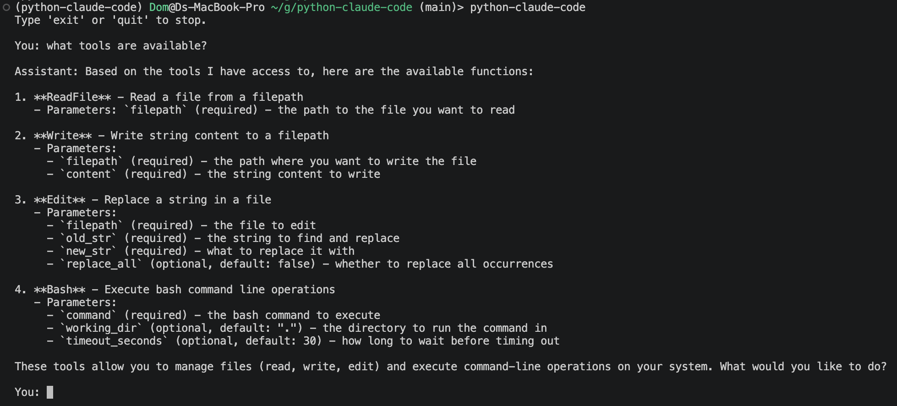
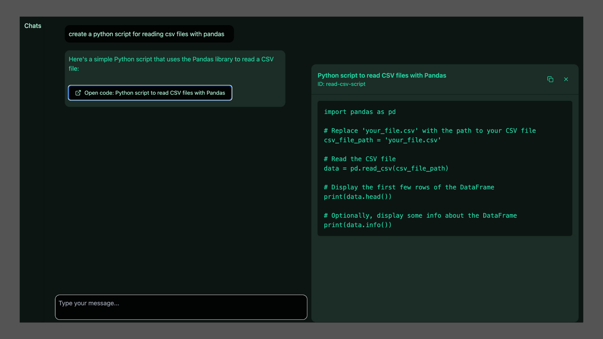
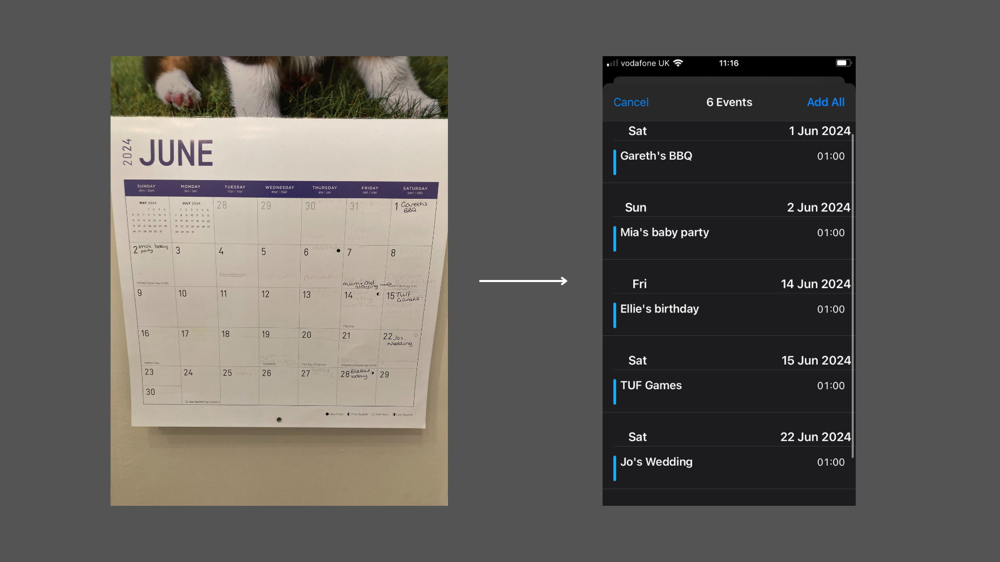
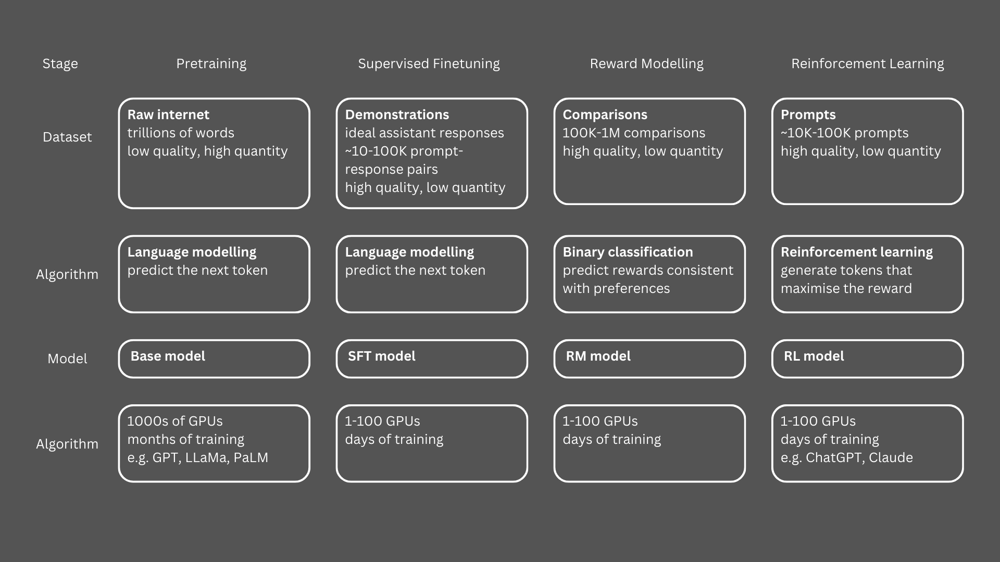

Senior Data Scientist at Aviva, building GenAI applications and data-driven products.
Previously at the Ministry of Defence training RNNs, CNNs, and Bi-LSTMs.
PhD in Computational Chemistry from UCL.
I like solving problems with code, learning new things, and thinking about thinking.
Get in touch at d.chaopradith@gmail.com.



